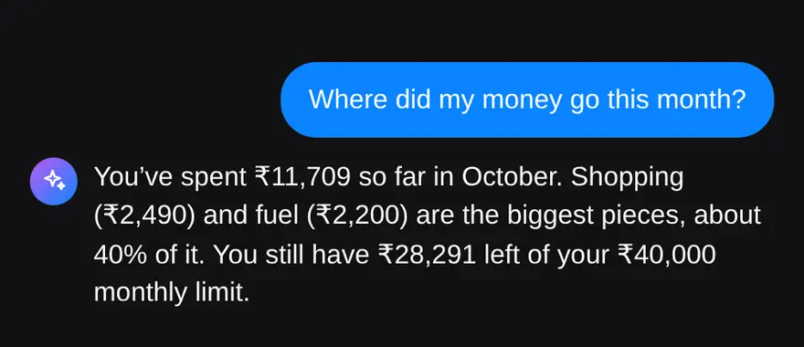

Why is it hard to see your Google Pay and PhonePe spending for the month?
Because your spending is split across apps, and each app lists payments one by one. Google Pay knows about its payments, PhonePe knows about its own, and your card and cash spends sit somewhere else again.
A payment history is useful for finding one transaction. It is not built to answer the question you actually have at the end of the month: how much went on food, how much on shopping, and is that more than last month? Scrolling through two or three lists and adding up numbers in your head is how most people give up on this.
What do you need to see where your money went?
Three things: every payment in one place, a category on each payment, and last month to compare against. Once you have those, the answer is usually obvious within a minute.
- One place. Payments from Google Pay, PhonePe, Paytm, your bank app, cards and cash, all counted together.
- Categories. “Swiggy ₹340” on its own means little. “Food ₹1,980 this month” tells you something.
- A comparison. ₹2,490 on shopping is only high or low next to what you usually spend.
You can build this in a spreadsheet, but categorising every row by hand is slow. An expense tracker that reads your payment history and suggests categories does the boring part for you.
How do I see my Google Pay and PhonePe spending by category?
Screenshot each app’s history, import the screenshots into MoneyOS, then open the category view. Here are the steps:
- Screenshot this month’s history in Google Pay and PhonePe, plus Paytm or your bank app if you use them.
- In MoneyOS, tap the add button, then Photos, and pick up to 10 screenshots at once. Repeat for the next app.
- Check the categories. Each payment arrives in a review list with a suggested category. Fix any that are wrong, untick repeats, then tap Import.
- Open the category view. On Home, switch Transactions from All to Categories. Tap a category to see every payment in it.

Categories are suggested from the merchant name: Swiggy and Zomato as food, Zepto and Blinkit as groceries, Uber, Ola and Rapido as travel. If a payment went to a person or a small shop with an unclear name, pick the category yourself, or create your own category such as “House help” or “Gym”.
Because likely repeats are flagged, it is fine if your screenshots overlap. If you have already followed our guide to tracking UPI payments without a bank login, your month is probably in already and you can skip straight to step 4.
How do I compare this month with last month?
Open Stats. It sums up the month in one sentence, shows how it compares with the months before, and names the categories that moved the most since last month.
That last part is the useful one. A total that is ₹2,000 higher than last month does not tell you what to change. Seeing that shopping went up while fuel went down does.
Stats has its own month navigator, so you can step back and look at any earlier month the same way. On Home, the heat map shows each day of the month in green (under your daily pace) or red (over it). Tap a red day to see exactly what happened.

Can I just ask where my money went?
Yes. On an iPhone that supports Apple Intelligence, open Ask and type “Where did my money go this month?” You get the answer in plain words, with your biggest categories and how much of your limit is left.

Apple’s on-device model does the talking and your own ledger does the maths, so every number is real and nothing leaves the phone. On iPhones without Apple Intelligence, quick queries give the same answers. You can read more about how the app handles your data in our privacy policy.
What should I do once I know where the money went?
Pick one or two categories that surprised you and put a limit on them. Trying to cut everything at once rarely lasts. Cutting the one category that grew usually does.
- Set a category limit. MoneyOS notifies you at 80% and again at 100%, so you hear about it while there is still time to slow down.
- Watch your daily pace. Home shows what you have spent today, this month, and what is safe to spend per day for the rest of the month.
- Keep investments separate. SIPs and other investments are tracked but do not count as spending, so saving more never looks like overspending.
- Repeat it weekly. A Sunday screenshot import keeps the month current, so the end of the month holds no surprises.
If some of your spending shows up as bank SMS rather than in a UPI app, see why iPhone apps can’t read bank SMS, and what to do instead. For a tour of everything else in the app, read our introduction to MoneyOS.
Frequently asked questions
Can I see Google Pay and PhonePe spending together?
Yes. Screenshot the payment history in each app and import the screenshots into MoneyOS. Payments from Google Pay, PhonePe, Paytm and bank apps all land in one ledger, so the month’s totals cover every app.
How does MoneyOS decide the category of a payment?
It suggests a category from the merchant name, for example Swiggy as food, Zepto as groceries and Uber as travel. You can change it in the review list before importing, and you can add your own categories.
Are my payment screenshots uploaded anywhere?
No. MoneyOS reads screenshots on your iPhone. There is no account and nothing is sent to MoneyOS or to any server.
Do SIPs and investments count as spending?
No. In MoneyOS, SIPs and other investments are tracked but do not count towards your monthly spending, so your spend total is not inflated by money you are saving.
Can I see where my money went in previous months?
Yes. Stats has its own month navigator, so you can step back to any earlier month and see its total, its trend and the categories that changed most.
Is MoneyOS free?
Yes. The whole app is free, with no subscription, no ads and no in-app purchases.